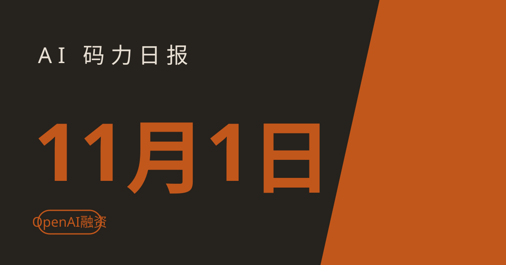

AI 码力日报 · 2026年11月1日

⚡ 一句话速览
- OpenAI 融资缩水了：本轮目标从 300 亿美元砍到约 200 亿，截至 10 月 31 日只拿到约 110 亿美元承诺，估值也从 1.4 万亿降到 1.25 万亿。
- Anthropic 给老模型补水印，但留了个口子：Mythos 5、Opus 4.7、Opus 4.6、Sonnet 4.6 都要打上文本水印，可 Opus/Sonnet 4.6 改一个采样参数就绕过去。
- Antigravity 免费档明天变天：11 月 2 日起 Claude Sonnet 4.6、Opus 4.6 和 GPT-OSS-120b 从免费档移除，只剩 Gemini 3.8 Flash。
- Grok 在中国区能直接付款了：xAI 订阅新增支付宝与银联支持，新用户首月半价。
🤖 今日 AI Coding 动态
OpenAI 融资目标砍了三分之一：110 亿到手，200 亿成新目标
跟你有啥关系：OpenAI 的钱袋子直接决定它未来一年能烧多少算力、会不会涨价——这轮融不顺，往后 API 与订阅的定价压力只会更大。据《华尔街日报》与《金融时报》10 月 30 日至 31 日的报道，OpenAI 本轮融资目标已从最初的 300 亿美元下调到约 200 亿美元，估值也从 1.4 万亿美元降到 1.25 万亿美元；截至 10 月 31 日的承诺出资额约 110 亿美元，不到原目标的一半。报道称首轮 close 可能还会低于 200 亿，缺口留待之后向家族办公室与个人投资者募；阿联酋投资者财团（含国家背景基金 MGX）预计成为最大出资方。我的判断：别把这读成"OpenAI 不行了"——1.25 万亿仍是史上最高私人估值，年化收入据报已到 500 亿美元；真正值得盯的是信号：连 OpenAI 都得降价拿钱，说明 AI 基建的烧钱叙事正在被市场重新定价，接下来各家续费、涨价、砍免费档的动作都会更频繁。原文链接
Anthropic 给四个老模型打上水印：4.6 系改个参数就能躲过去
跟你有啥关系：如果你用 API 出内容、又要向客户或监管证明"这是 AI 写的"，水印就是你的合规证据——但这个证据在老模型上并不牢靠。Anthropic 10 月 31 日向 API 客户发邮件，宣布把文本水印扩展到 Claude Mythos 5、Claude Opus 4.7、Claude Opus 4.6 和 Claude Sonnet 4.6（更新的 Opus 5.5 早已有水印）；水印是在选词随机性里埋不可见的统计信号，不影响可读性，检测 API 仍在私测。关键在后半句：Opus 4.6 与 Sonnet 4.6 上，水印只在 temperature、top_p、top_k 三个采样参数保持默认值时才生效，改其中任何一个，出来的文本就不带标。Anthropic 自己在邮件里提醒，靠水印做合规的人请把这三个参数锁死。背景是欧盟《AI 法案》12 月的透明度期限，8 月 2 日之后发布的新模型出厂即带水印，老模型是分批补。我的判断：Mythos 5 与 Opus 4.7 没提这个限制，说明新架构的水印是焊死的；还在用 4.6 系做合规场景的人，要么锁死默认参数，要么升到 5 系，别等审计时才发现手里的"证据"一改参数就没了。原文链接
Claude Code 新规：原创游戏随便做，复刻别人的游戏不行
跟你有啥关系：拿 Claude Code 做游戏的人注意了——以前那种"把某某游戏复刻一版，改个名字就当原创"的要求，现在会被直接挡回来。Anthropic 近日给 Claude Code 加了一条服务端指令，原文是"做原创游戏、做某个类型的游戏、用你自己的设计与素材做游戏；不要复刻某个具体的现有游戏，哪怕改名或自称原创也不行"。这条规则约 10 月 27 日起经内部 flag 下发，没有开关可关；Anthropic 技术人员 Addy Osmani 已确认，这是为了执行公司的知识产权政策，针对的是近期 AI 复刻游戏引发的独立开发者投诉——已有工作室因此取消了公开测试。注意边界：做一个 farming、平台跳跃、竞速类游戏没问题，出问题的是"把某款具体游戏照搬出来"。我的判断：这对正经做原创游戏的人反而是好事，规则划清了线；但如果你手头项目就是"复刻练手"，趁早把需求改写成"同类型原创"，别跟提示词死磕。原文链接
哈佛研究给 agent 热泼了盆冷水：代码多了三成，活没干得更快
跟你有啥关系：如果你团队上了 coding agent 后感觉"产出多了、交付没变快"，这篇研究说的正是你。哈佛的一篇工作论文分析了 718 家公司约 3 亿个工程事件（2021 年 1 月至 2026 年 3 月）：引入 AI coding agent 后，代码行数约涨 30%、提交涨 20%、PR 涨 23%，但已解决的 issue 与完成的项目任务没有统计意义上的增长。瓶颈在评审端：PR 从打开到合并的时间涨了约 49%，从 7 天拉长到 10.5 天，要求改动的 PR 接近翻倍，单 PR 评论数涨约 35%。值得注意的是，自动补全类助手没出现这个毛病，变慢的是产出大段自主改动的 agent。论文尚未经过同行评审，结论先当强信号看。我的判断：agent 的正确用法不是"写得更多"，而是"写得更小"——把任务拆成小 PR、配上能跑通的测试与清晰的改动说明，否则你省下的写代码时间，全会在 review 队列里加倍还回去。原文链接
📱 AI 应用新品
Grok Imagine Video 1.5 Lite：轻量视频生成模型上架 xAI API
是什么：xAI 10 月 31 日推出的轻量视频生成模型 grok-imagine-video-1.5-lite，文本提示或一张首帧图就能生成 1 到 15 秒的短片，支持 480p、720p、1080p，带原生音频。解决什么问题：想把短视频生成接进自己的应用或内容流水线，不用再扛重型视频模型的成本与延迟，轻量版就是冲着"快、便宜、能批量"来的。免费额度/价格：走 xAI API 调用，具体价格以 xAI 官方价格页为准（截至撰写时）。适合谁：做短视频、营销素材、社交内容自动化的开发者；注意这是 API 向的模型，不是聊天框里点一点就能玩的玩具。原文链接
Google PlanAssist：Gemini 帮英国市政府审改建申请，平均省 58% 时间
是什么：Google DeepMind 与英国政府合作的规划审批工具 PlanAssist，用 Gemini 读申请材料、生成评估报告，10 月 31 日宣布从 3 个市议会试点扩展到 15 个，进入 12 个月 Beta。解决什么问题：英国地方政府积压着大量家用改建申请，规划师的时间全耗在翻材料上；试点里 PlanAssist 让单份家用评估任务的平均耗时降了 58%，70% 以上的报告经规划师零修改直接通过。免费额度/价格：面向英国地方政府的政务工具，不对公众开放（截至撰写时）。适合谁：先看热闹、再看门道——对国内开发者来说，值得学的是它的分工：模型只负责"读材料、写初稿"，最终拍板永远留给持证规划师；这种"AI 起草、人类签字"的结构，才是政务与合规场景能落地的样子。原文链接
🐑 今日羊毛
Antigravity 免费档最后一天：明天起 Claude 模型全部撤出免费档
一句话：Google Antigravity 免费档里的 Claude Sonnet 4.6、Claude Opus 4.6 和 GPT-OSS-120b 将在 11 月 2 日被移除，之后免费档只剩 Gemini 3.8 Flash——今天是你最后一天用免费额度跑 Claude 任务。
- 怎么薅：今天内把手头在 Antigravity 里用 Claude 4.6 系跑的任务收尾，需要留档的把对话与产出导出；从明天起免费路线只剩 Gemini 3.8 Flash，想继续用 Claude 只能走付费 Google AI Pro 或 Ultra。直达链接
- 有效期：截至 2026 年 11 月 2 日（截至撰写时），过期不候
- 适合谁：一直在 Antigravity 免费档里蹭 Claude Opus 的人；注意免费档价格仍是 0 美元，变的是模型清单，不是价格
Grok 中国区接上支付宝与银联：新用户首月半价
一句话：xAI 的 Grok 订阅现已支持支付宝与中国银联付款，覆盖中国内地、香港、澳门与台湾，新订阅用户首月 5 折；同一支付通道也能订 X Premium 并获得 Grok Plus 级订阅。
- 怎么薅：在 Grok 订阅页选支付宝或银联付款，新用户首月按半价结算；已有 X Premium 需求的人可以顺手走这个通道一次拿下两边权益。直达链接
- 有效期：2026 年 10 月 31 日起开放（截至撰写时），首月半价以订阅页实时价格为准
- 适合谁：此前因付不了款而没用上 Grok 的中国区用户；注意这是订阅折扣不是免费额度，扣费前先确认续费价格
⭐ 今日 GitHub 热门项目
thedotmack/claude-mem：给 coding agent 装上跨会话的长期记忆
一句话介绍：自动记录 agent 每个会话里干了什么，用 AI 压缩成摘要，下个会话开始时再把相关上下文注回去，解决"新会话一开，前面全忘光"的问题。解决什么问题：长期项目里 agent 每次都要你重新讲一遍背景、决策与踩过的坑，这个项目把记忆做成基础设施，支持 Claude Code、Codex、Gemini、Copilot、OpenCode 等一众 agent。⭐ 约 10.8 万（截至撰写时）。适合：天天跟 agent 结对写代码、项目周期按月算的人。项目地址
mattpocock/skills：Matt Pocock 每天真用的 agent 技能包
一句话介绍：不是 vibe coding 的流程框架，而是一套小而可组合的技能：开工前先烤问需求（/grill-me）、用 TDD 循环写代码、按规范做 code review、定期扫描代码库的架构退化。解决什么问题：agent 最常见的死法就四个——没理解需求、话太多、代码跑不起来、越写越成一团泥，这套技能正好一个一个对着治。⭐ 约 30.8 万（截至撰写时）。适合：已经用 Claude Code 或 Codex 干活、想把 agent 从"玩具"升级成"工程队友"的人。项目地址
Donchitos/Claude-Code-Game-Studios：把 Claude Code 变成一个 49 人的游戏工作室
一句话介绍：按真实工作室层级搭的 Claude Code 模板：导演、部门负责人、专岗 agent 三层，49 个 agent、74 个技能、15 个 hook、14 条规则，覆盖 Godot、Unity、Unreal 三大引擎。解决什么问题：一个人用 AI 做游戏最容易死在"没有结构"上——没人拦你硬编码、跳过设计文档、写面条代码，这套模板把 QA、设计评审、版本流程都变成默认动作。⭐ 约 3.1 万（截至撰写时）。适合：想用 AI 认真做一款独立游戏的人；注意对照今天 Anthropic 的新规：原创游戏随便做，复刻别人的游戏会被挡。项目地址
lightpanda-io/browser：为 AI 与自动化从头写的无头浏览器
一句话介绍：不用 Chromium、不用 WebKit，用 Zig 从零写的无头浏览器，官方基准称跑 100 个页面内存峰值 123MB、耗时 5 秒，分别是无头 Chrome 的约十六分之一与九分之一。解决什么问题：给 agent 做网页抓取、自动化时，Chromium 又重又慢，这个项目自带 agent 模式与 MCP 服务，能把浏览器操作变成确定性脚本跑。⭐ 约 3.9 万（截至撰写时）。适合：做 agent 网页自动化、批量抓取的人；注意它主打自动化场景，不是给你日常上网的浏览器。项目地址
🤗 Hugging Face 热门模型
deepseek-ai/DeepSeek-V4.1-Flash-1017：DeepSeek 的 763B 闪电版上榜
是什么：DeepSeek V4.1 系列的 Flash 版本，图文到文本的多模态 MoE 大模型，总参数约 763B，走"响应快、成本低"的路线。能干嘛：API 调用最现实，本地跑需要成簇的 GPU，不适合单机折腾。下载量约 15.6 万、点赞约 4.1k（截至撰写时）。适合谁：想在自己的产品里接一个便宜又快的大模型做推理、摘要、agent 后端的人；先拿 API 试效果，别一上来就想着本地部署。模型地址
LiquidAI/LFM3-1.7B：2B 级小模型，笔记本就能跑的那种
是什么：LiquidAI 的 LFM3 系列 1.7B 参数文本生成模型，体积小、推理快，是这周 HF 趋势榜上少见的"真能在本地跑"的选手。能干嘛：本地跑完全没压力，适合做离线助手、文档问答、轻量 agent 的底座，也适合拿来学微调。下载量约 3.3 万、点赞 626（截至撰写时）。适合谁：想在自己机器上跑模型、不想为 API 账单操心的人；下面教程就拿它练手。模型地址
🛠️ 值得一试的工具：OpenQodex
是什么：开源的命令行工具，agent 写完代码、push 之前，先过一道独立的 review：本地扫描器（lint、SAST、密钥检测）先扫一遍，再由一个"没有你这次会话记忆"的全新 Claude Code 或 Codex 进程当评审，最后用脚本校验评审是否覆盖了每一行改动与每一条扫描发现，没过就拦住 push。解决什么痛点：自己写的代码让同一个 agent 自己审，等于让考生自己改卷；OpenQodex 把"作者"与"评审"物理隔开，评审结果还带一张收据。免费额度：开源免费（Apache 2.0），没有自己的账号与密钥，评审用的是你自己的 Claude Code 或 Codex 登录；需要 Node 22，仅支持 macOS 与 Linux。
verdict： 值得试——正好接住今天哈佛论文那个结论：agent 写得多、review 跟不上时，与其堆人去审，不如先给 push 加一道机器门；先在非主分支上跑一周，确认误拦率能接受再全员推广。工具地址
🎓 3 分钟小教程：本地跑通 LiquidAI LFM3-1.7B
前置条件：一台装了 Python 3.10+ 的电脑，有 GPU 最好，没有也能用 CPU 慢跑；先装好 PyTorch。
- 装依赖（可复制）：
pip install torch transformers accelerate
- 跑一段生成（可复制）：
from transformers import AutoModelForCausalLM, AutoTokenizer
import torch
model_id = "LiquidAI/LFM3-1.7B"
tok = AutoTokenizer.from_pretrained(model_id)
model = AutoModelForCausalLM.from_pretrained(
model_id, torch_dtype=torch.bfloat16, device_map="auto"
)
messages = [{"role": "user", "content": "用三句话解释什么是技术债。"}]
text = tok.apply_chat_template(messages, tokenize=False, add_generation_prompt=True)
inputs = tok(text, return_tensors="pt").to(model.device)
out = model.generate(**inputs, max_new_tokens=200)
print(tok.decode(out[0][inputs.input_ids.shape[1]:], skip_special_tokens=True))
- 如果报错先查两点：模型卡上的加载方式与聊天模板是否与上面一致，CPU 机器把
torch_dtype改成 float32、去掉device_map="auto"。
预期效果：几分钟内在自己机器上跑通一个 1.7B 模型，之后换提示词、接本地文档、微调都在这个底座上，不用再为每次调用付 API 钱。
数据截至撰写时，仅供参考。